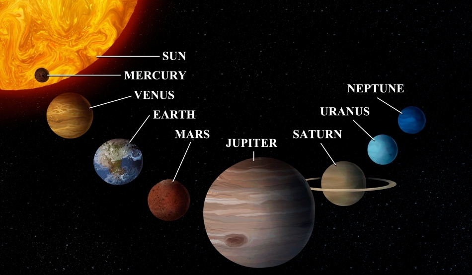

Cea mai mică și cea mai apropiată planetă de Soare. Ziua pe Mercur este extrem de fierbinte (peste 400°C), iar noaptea foarte rece (sub -170°C). Nu are atmosferă densă și nici sateliți naturali.
Are o atmosferă densă, bogată în dioxid de carbon, care produce un efect de seră intens, făcând-o cea mai fierbinte planetă. Suprafața este ascunsă de nori groși de acid sulfuric. Ziua pe Venus durează mai mult decât anul său.
Este singura planetă cunoscută care susține viața. Are oceane, atmosferă cu oxigen și o climă variată. Luna este satelitul său natural. Se rotește în 24 de ore și orbitează Soarele în 365 de zile.
Numită și „Planeta Roșie” din cauza oxidului de fier de pe suprafață. Are cei mai mari vulcani și canioane din sistemul solar. A fost ținta multor misiuni spațiale și ar putea fi colonizată în viitor.
Cea mai mare planetă din sistemul solar. Este un gigant gazos compus în principal din hidrogen și heliu. Are o faimoasă pată roșie – o furtună uriașă activă de sute de ani – și peste 90 de sateliți, inclusiv Europa, un posibil candidat pentru viață extraterestră.
Cunoscut pentru inelele sale spectaculoase formate din gheață și particule de rocă. Este al doilea cel mai mare gigant gazos. Are peste 80 de sateliți, inclusiv Titan, care are o atmosferă densă și lacuri de metan lichid.
Este un gigant înghețat cu o culoare albastră-verzuie dată de metanul atmosferic. Se rotește aproape pe lateral, ceea ce îl face unic. Are 27 de sateliți cunoscuți și un sistem slab de inele.
Este cea mai îndepărtată planetă de Soare. Are vânturi extrem de rapide, cele mai puternice din sistemul solar. Culoarea sa albastră intensă este datorată metanului. Triton, satelitul său principal, este foarte activ din punct de vedere geologic.